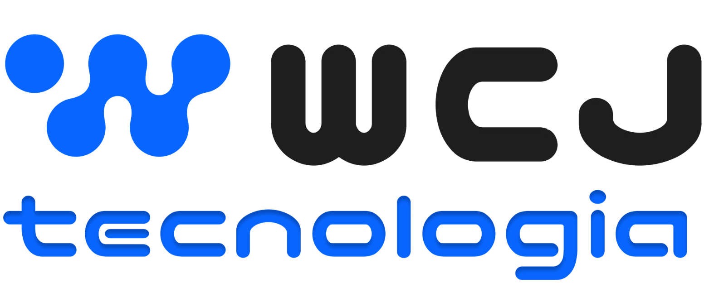

Elas registram o que foi dito na reunião. Se algo estiver errado, faltando ou mal interpretado, responda ao Lucas Scholz com o número do item. As seções 3 e 4 são para ciência e também aceitam comentários.
| # | Assunto | O que foi dito |
|---|---|---|
| 1 | Fluxo de etapas | É personalizado por projeto. |
| 2 | Esteira | É a sprint: o que está pronto para desenvolver. |
| 3 | Devoluções do QA | No quadro Wpay foram 46 devoluções contra 21 aprovações em 2 meses. Boa parte são ajustes visuais pequenos. O indicador precisa separar devolução trivial de devolução séria. |
| 4 | Causa do retrabalho | "Muita coisa volta quando a gente documenta mal alguma demanda." Projeto refinado antes (ex.: gestão de multas, futuro PTA) volta menos. |
| 5 | Revisão técnica pulada | Não é esquecimento. Há tarefa sem nada para testar em tela (ex.: Swagger): tem revisão técnica e não tem QA. A tarefa define quais validações se aplicam. |
| 6 | 2 pessoas por card | São back-end e front-end. QA e gestor não se colocam no card, mas acompanham tudo. Atribuir pessoas por função (back, front, QA) foi aprovado, principalmente para projeto de cliente. |
| 7 | Prazo | O Wpay não segue o modelo de gestão; projetos de cliente têm início e fim. Prazo tem que existir. |
| 8 | Horas | O Trello pago (cerca de R$ 500,00 por mês) só registra início e fim e não compara previsto × realizado. A ideia é lançar a previsão e acompanhar o realizado. |
| 9 | Estimativa pelo dev | O dev analisa o documento e o card e informa as horas por item ("isso aqui eu demoro 8 horas"). |
| 10 | Horas em dias | Hoje a conversão é manual, e feriados atrapalham. Precisa considerar dias úteis, feriados e a carga de cada dev: 16 h são 2 dias para quem trabalha 8 h por dia e 4 dias para quem trabalha 4 h. |
| 11 | Versão (release) | A data é definida por projeto. Em projeto de cliente: fecha a sprint, valida e planeja a subida, e muitas vezes o cliente decide quando. Em projeto interno: acumula demandas e sobe quando convém. |
| 12 | Cronologia de entregas | A linha do tempo da Tecsolution foi montada à mão, lista por lista. Deve ser gerada pelo sistema, em linha do tempo, para apresentar ao cliente. |
| 13 | Chamado no projeto | Uma coluna "Chamados" no quadro do projeto. O cliente abre o chamado no portal, escolhe o projeto (ex.: PDV, KDS) e a categoria "desenvolvimento", e o chamado aparece como card, com notificação. |
| 14 | IA no fluxo | Aprovado: a IA avança os cards e escreve a documentação. Hoje a documentação só é feita em projeto de cliente, porque é trabalhosa. |
| 15 | Documento de requisição | Preencher os requisitos e o sistema gerar o documento padrão WCJ e anexar à tarefa, no modelo das requisições SGM. |
| 16 | Requisito vira teste | Cada critério de aceite inserido vira item do checklist de teste, como caixa de marcar para o QA. |
| 17 | PR | O dev abre o PR; a IA anexa o link à tarefa e outra pessoa aprova. |
| 18 | O que fica fora do Trello | Apresentações para o cliente (histórico de versões e entregas). |
| 19 | Produtividade por dev | Ver, por dev, entrega no prazo e retrabalho. |
| 20 | O que se esquece | Problema avisado a outra pessoa era esquecido e gerava chamados. Pedido: notificar ao atribuir uma tarefa. |
| 21 | O que pediria à IA | Criar cards e automatizar o relatório para o cliente. |
| 22 | Fechamento para pagamento | Relatório de tudo o que foi entregue no período, com detalhe, para o cliente (ex.: PTA) aprovar antes de pagar e a WCJ emitir nota. |
| # | Decisão |
|---|---|
| D-PRJ-01 | Fluxo de etapas configurável por projeto. |
| D-PRJ-02 | Nenhuma tarefa sai do Backlog sem responsável. |
| D-PRJ-03 | Dev vê só os projetos em que está alocado. |
| D-PRJ-04 | Não migrar o histórico do Trello na v1: começar do zero com os projetos ativos. A migração pode vir depois. |
| D-PRJ-05 | A v1 de Projetos são "as funcionalidades do Trello com a adição do controle do tempo": tempo por etapa e horas previstas × realizadas. |
| D-PRJ-06 | Cada módulo tem a sua v1 (Projetos, Chamados, CRM). |
| D-PRJ-07 | Nomenclatura indiferente para a equipe; o sistema usa "tarefa". |
| # | Decisão |
|---|---|
| D-PRJ-08 | Gestor de projetos não vê o pipeline comercial nem valores de proposta. |
| D-PRJ-09 | Revisão técnica é a aprovação do PR pelo Tech Lead. |
| D-PRJ-10 | O Tech Lead varia por projeto. |
| D-PRJ-11 |
Colunas padrão do quadro:
Backlog→To do→Doing→Code-review→In test→Done·Paused
Fluxo da tarefa: desenvolve → abre PR → code review → teste cruzado (outro dev) → QA → merge → entra no pacote → homologação do pacote → produção.
|
| D-PRJ-12 | O QA testa no ambiente local dele; o Tech Lead faz o merge. |
| D-PRJ-13 | O cliente não participa da homologação do pacote: a equipe WCJ testa tudo junto. |
| D-PRJ-14 | Colunas padrão em inglês, sempre editáveis por projeto. |
| D-PRJ-15 | Teste cruzado ligado por padrão em toda tarefa; quem não quiser desmarca. |
| D-PRJ-16 | Fluxo aberto. Uma tarefa pode ter vários PRs; qualquer pessoa alocada move a tarefa; travas de PR e de função são opcionais por projeto. O sistema traz um padrão pronto e cada projeto se adapta. |
SGM-17)Os dados de retrabalho e produtividade já são gravados desde a v1; as telas desses indicadores vêm depois sem perder histórico.
| # | Pendência | Com |
|---|---|---|
| P-01 | Enviar o modelo do relatório de fechamento para pagamento. | Rafael |
| P-02 | Enviar a lista do que o relatório de fechamento precisa conter. | Rafael |
| P-05 | Validar esta ata. | Rafael |
Sugestão registrada: usar o Vitinho no desenvolvimento dos módulos, aproveitando a capacidade livre da equipe enquanto os projetos novos não entram. Vai para decisão do Comitê de IA.